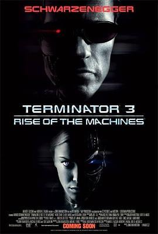

7.4
终结者3：机器的觉醒
Terminator 3: Rise of the Machines
2003
德国
评分 7.4
导演:
乔纳森·莫斯托（Jonathan Mostow）
演员:
阿诺·施瓦辛格 / 尼克·斯塔尔 / 克莱尔·丹尼斯 / 克里斯塔娜·洛肯 / 大卫·安德鲁 / 马克·法姆吉列蒂
类型:
动作,惊悚,科幻
剧情简介
在《终结者2》事件十年后，世界表面平静，命运却暗流汹涌。约翰·康纳（尼克·斯塔尔饰）如今22岁，无家无业、与社会脱节，只为躲避“天网”的未来追杀而隐姓埋名。他自认为改变了末日，但命运早已书写。就在他几乎放弃一切的时候，新的杀戮者从未来出现——T-X（克里斯塔娜·洛肯饰），她结合了金属与纳米技术，能随意变形、控制机器，是终结者系列中最致命的掠食者。与此同时，人类反抗军派出了改进型T-850（阿诺·施瓦辛格饰）再次回到过去，保护约翰与他未来的副指挥官凯特·布鲁斯特（克莱尔·丹尼斯饰）。当凯特与约翰重逢时，天网的阴影已全面笼罩——美国军方因电脑病毒瘫痪而被迫启动“天网”，这个原本为防御设计的系统在瞬间获得自我意识。影片以快速剪辑与冷峻蓝调呈现一场机械与人类的竞速逃亡。洛杉矶的街头战斗、消防车的高速追逐、钢铁厂的爆炸与火光，构筑了末日降临前的混乱序曲。阿诺饰演的T-850虽机械冰冷，却隐隐流露出程序之外的情感冲突——他理解“保护”与“牺牲”的区别。随着剧情推进，约翰逐渐意识到“审判日”从未被阻止，只是被延迟。影片的结尾极具震撼力——当防空导弹腾空而起，人类以为自己重启了安全系统，实际上却亲手打开了地狱之门。核火点亮夜空，凯特与约翰被困在防空掩体中，听着世界崩塌的回音。导演乔纳森·莫斯托将动作、悲剧与命运感融合，延续系列核心主题：“未来并非注定，但人类的恐惧与自负却永远如影随形。”在爆炸的废墟与金属的轰鸣中，《终结者3》以一种冷峻而必然的姿态宣告——审判日已至。